A+AI 검증 루프 — 라운드 10
2026-10-23T03:33:21.908Z · 케이스 15 × 규격 8 · 위 줄 A(규칙) / 아래 줄 C(AI 판단 + 규칙) · 채점 Claude claude-opus-5-5
# 라운드 10 — 2026-10-23 03:33
평균 점수(C, 1~5, Claude 채점): **3.16** · 자동 점수 3.14 · 그림 면적 평균 39% · 비용 $1.317 · 얼굴 잘림 0
| 유형 | 평균 | A 나음 | C 나음 | 같음 |
|---|---|---|---|---|
| 사진 | 3.25 | 0 | 4 | 1 |
| 누끼 | 3.23 | 0 | 5 | 0 |
| 오브젝트·일러스트 | 3.00 | 0 | 5 | 0 |
AI 상자 결과: shrink 54 · free 32 · rule 22 · grow 7 · ok 5
## 문제 집계
- kvWeight:too_small 41
- bg:flat 41
- crop:subject_cut 29
- crop:awkward 29
- text:low_contrast 18
- kvWeight:too_big 4
- text:overlap 4
- bg:seam 3
- crop:face_cut 2
- text:clipped 1
## 케이스별 큰 문제
- **t1014-hanssem**(사진) · same 나음: 1250×560·970×250에서 사진 비중이 과해 TV 화면과 로고·제목이 겹친다. AI가 키비주얼을 크게 키우면서 텍스트 안전 영역 규칙을 덮어쓴 것으로 보인다. / 가로형 규격 대부분이 오른쪽 인물 중심으로 크롭되어, 정장 인물이 빠지거나 얼굴이 페이드에 묻힌다. 크롭 초점을 한 사람으로만 잡은 것으로 추정된다. / 세로형(300×600, 300×1050)은 사진이 하단에 작게 붙고 글자가 작아 지면이 비어 보인다. 가로형 사진을 세로 지면에 재배치하는 로직이 부족한 것으로 보인다.
- **hr-doctor**(사진) · C 나음: 580×400·1080×1080·300×600에서 손이 구석에 작게 잘려 들어감. 세로형·정사각형에서 크롭 기준점을 손 중심이 아니라 원본 우하단에 고정한 탓으로 추정 / 300×1050 등 세로 극단 규격에서 글자 크기를 폭 기준으로만 줄여 판독이 불가함 / 전면 보라·회색 틴트가 사진을 탁하게 만들어 A의 브랜드 블루보다 활기가 떨어짐. 다만 A는 단색 블록이 사진을 덮고 1250×560에 사각 경계가 드러나 C가 전반적으로 낫다
- **midas-team-photo**(사진) · C 나음: 세로형·정사각형(1080×1080, 300×600, 300×1050)에서 사진이 하단에 작게 배치돼 단색 지면이 비어 보이고 인물이 잘림. 가로형 기준 크롭·배율 규칙을 세로형에 그대로 적용한 것으로 추정됨. / 970×250에서 로고가 사진 영역 위에 놓여 인물 주변과 겹침. 로고 위치를 고정 우상단 규칙으로 처리하면서 사진 영역을 피하지 않은 것으로 추정됨. / 300×1050의 텍스트 스케일이 지면 폭에 비해 지나치게 작아 판독 불가. 최소 폰트 크기 하한 규칙이 없는 것으로 추정됨.
- **t1014-asan-photo**(사진) · C 나음: 정사각·세로형(1080×1080, 300×600, 300×1050)에서 사진이 하단 띠로만 깔려 지면 대부분이 단색으로 비어 보임 — 원인: 가로형 원본을 폭 기준으로 맞춰 하단에 고정 배치하고, 세로 크롭이나 확대를 판단하지 않음 / 1200×600에서 병원 건물 없이 우하단 야경 조각만 노출 — 원인: 우측 정렬 시 원본 왼쪽(건물)이 아니라 오른쪽(야경) 끝 기준으로 크롭함 / 300×1050 텍스트가 지나치게 작아 가독성이 떨어짐 — 원인: 폭 기준 스케일링으로 세로 여유 공간을 활용하지 못함
- **midas-cablebridge**(사진) · C 나음: 1200×600에서 헤드라인이 주탑 케이블과 겹친다. 글자 폭을 계산할 때 주인공 위치(bbox)를 회피 영역으로 반영하지 않은 것으로 보인다. / 300×1050·300×600·1080×1080에서 글자가 지나치게 작다. 규격 비율과 상관없이 고정 비율로 글자를 줄이는 규칙 탓에 세로형·정사각형에서 판독성이 무너진다. / 세로형에서 다리가 어색한 조각으로 잘린다. 가로로 넓은 주인공(덩어리 여럿)을 세로 지면에 넣을 때 주탑 하나를 골라 크롭하는 판단이 없다.
- **t1014-dongsuh**(누끼) · C 나음: 정사각·세로형(1080×1080, 300×1050)에서 인물이 너무 작다. 세로형 누끼를 하단 고정·높이 비율로만 배치하는 규칙 때문으로 추정되며, 지면이 비어 보인다. / 970×250에서 인물이 중앙에 놓여 우측이 빈다. 텍스트 영역을 피하는 판단은 했지만 우측 정렬 앵커가 없는 것으로 보인다. / 빨간 로고를 노란 배경 위에 그대로 써서 대비가 약하다. A의 파랑 배경용 로고 처리를 C에 그대로 가져온 탓으로 보이고, 300×1050은 직무 상세 텍스트를 줄이지 않아 판독이 안 된다.
- **t1014-jeil**(누끼) · C 나음: 키비주얼을 하단 끝에 고정 배치해 실험실·공장 등 하단 장면이 캔버스에 잘림(하단 정렬 앵커와 스케일 규칙이 피사체 바운딩박스 여백을 고려하지 않는 것으로 추정) / 세로·정사각형(300×1050, 1080×1080, 580×400)에서 키비주얼이 작아 지면이 비어 보임(가로형 KV를 폭 기준으로만 축소하기 때문으로 추정) / 970×250·320×100 같은 납작한 규격에서 키비주얼이 높이를 넘거나 글자 조각만 남음(높이 대비 과확대와 크롭 포커스 미지정으로 추정)
- **t1014-bionote-dog**(누끼) · C 나음: 580×400·1080×1080에서 세로형 누끼를 하단 정렬 후 축소하는 규칙 때문에 강아지 머리만 빼꼼 솟은 어색한 조각으로 보임(머리 보존만 하고 몸통 비율은 고려하지 않은 것으로 추정) / 300×1050 초세로형에서 텍스트를 폭이 아닌 기본 스케일로 줄여 판독이 불가하고, 중앙이 비어 지면이 텅 비어 보임 / 누끼 털 가장자리의 흰 프린지가 파란 단색 배경 위에서 드러날 위험이 있으니 엣지 디프린지 처리가 필요함(원본 누끼 품질 문제)
- **abl-group**(누끼) · C 나음: 세로·띠형(300×600, 300×1050, 320×100)에서 가로형 캐릭터 떼를 커버 크롭해 대표 캐릭터가 빠지고 어색한 조각만 남음 — 그룹을 하나의 덩어리로 보고 우측 기준으로 크롭한 것으로 추정됨 / 1200×600·1080×1080에서 캐릭터를 하단 띠에만 작게 앉혀 지면 중앙이 비어 보임 — 텍스트 영역 보호를 우선해 KV 스케일을 보수적으로 잡은 듯함 / 정사각·세로형의 본문 텍스트가 너무 작아 읽히지 않음 — 텍스트 스케일이 짧은 변 기준으로 과하게 축소됨
- **midas-folder-blue**(누끼) · C 나음: 세로형(300×600, 300×1050)에서 아이콘이 오른쪽 끝에 붙어 폴더까지 잘림. 원인 추정: 정사각 키비주얼을 가로 기준 배치 규칙 그대로 우측·하단에 앵커링함. / 300×1050은 텍스트가 판독 불가 수준으로 작고 중간이 텅 비어 있음. 원인 추정: 텍스트 스케일을 가로 폭 기준으로만 계산하고 세로 여유 공간을 레이아웃에 반영하지 않음. / 580×400, 1080×1080에서 받침 플레이트가 하단·우측으로 잘려 어색함. 원인 추정: 하단 블리드 배치 규칙이 누끼 사물에도 적용됨(누끼는 온전히 보여야 함).
- **t1014-gs2025**(오브젝트·일러스트) · C 나음: 가장자리 페이드 마스크가 인물(걷는 남자)까지 덮어 반투명해짐 — 마스크 범위를 주인공 bbox와 무관하게 고정 폭으로 적용한 탓으로 추정 / 세로형·중형 규격에서 그림이 하단 띠로만 깔려 인물이 잘리고 지면이 빔 — 하단 앵커 고정과 텍스트 영역 우선 배치 규칙 때문으로 추정 / 300×1050 텍스트가 판독 불가 크기 — 최소 글자 크기 하한 없이 폭 기준으로만 스케일한 탓으로 추정
- **t1014-lt-v2**(오브젝트·일러스트) · C 나음: 1250×560과 580×400에서 칩이 오른쪽 끝에 붙어 반쯤 잘림. 원인은 키비주얼을 지면 오른쪽 끝에 맞춰 붙이면서 주인공 안전 영역을 두지 않은 것으로 추정된다. / 300×1050에서 키비주얼이 사실상 사라지고 텍스트는 극소 크기에 날짜까지 잘림. 원인은 세로로 매우 긴 비율에서 가로형 레이아웃을 그대로 축소해 적용한 것으로 추정된다. / 970×250과 1080×1080에서 칩 하단이 잘림. 원인은 키비주얼을 지면을 꽉 채우는 비율로 키우면서 세로 방향 크롭 기준을 칩 중심에 두지 않은 것으로 추정된다.
- **midas-faces-3d**(오브젝트·일러스트) · C 나음: 세로형과 정사각 계열(1200×600, 580×400, 300×600, 300×1050)에서 KV가 구석에 너무 작게 놓여 지면이 비어 보임. 원본 비율만 유지하고 축소한 채 가장자리에 붙이는 배치 규칙 탓으로 추정됩니다. / C는 글자를 검정이나 진회색으로 바꿔 파란 그라데이션 위에서 탁하고 브랜드 톤과도 어긋남. 배경 명도만 보고 글자색을 정한 AI 판단 탓으로 추정됩니다. / KV를 키운 규격(1080×1080, 320×100)에서 하단이나 좌우 가장자리에 얼굴과 손이 걸려 잘림. 확대 후 안전 영역을 확인하지 않은 크롭 때문입니다.
- **pin-15**(오브젝트·일러스트) · C 나음: 970×250·1080×1080·320×100에서 크롭이 세로형 KV의 상단(기둥 머리) 기준으로 잡혀 핵심 초점인 초록 보행신호가 빠짐 — 가로·정방형 규격에서 포컬 포인트 지정이 안 된 것으로 추정 / 1080×1080·320×100에서 KV 배율이 너무 작아 지면이 비어 보임 — 정방형·초소형 규격에 축소 비율 규칙만 적용되고 AI 판단이 반영되지 않은 것으로 추정 / 580×400·300×1050에서 보행신호기나 신호등이 프레임 가장자리에서 잘림 — 우측 정렬 기준이 피사체 폭을 고려하지 않음
- **t1014-asan-illust**(오브젝트·일러스트) · C 나음: 대부분의 규격에서 키비주얼이 너무 작게 하단·우측 구석에 붙어 지면이 빈 파랑으로 남습니다. 원인은 배경색 확장과 축소 배치로 처리하고, 인물 크기를 지면에 맞춰 키우지 않은 것으로 보입니다. / 인물 크롭이 머리 조각이나 한 명의 반신처럼 어색하게 잘립니다. 원본이 가로형 단체 일러스트라 세로·정방형에서 주인공(인물 얼굴) 기준의 재크롭 판단이 없었던 것으로 추정됩니다. / C는 970×250과 1250×560에서 인물을 키워 개선했지만, 나머지 규격은 A와 사실상 동일해 AI 판단이 일부 규격에만 적용된 것으로 보입니다.
t1014-hanssem · 사진 · AI 유형 photo ·
same 나음따뜻한 우드톤 쇼룸 사진이라 지면을 같은 갈색 계열로 이어 칠하고 인물 얼굴은 통째로 보존했다. 글자 반대쪽에 그림을 크게 두고 글자 쪽 변은 충분히 녹였다.
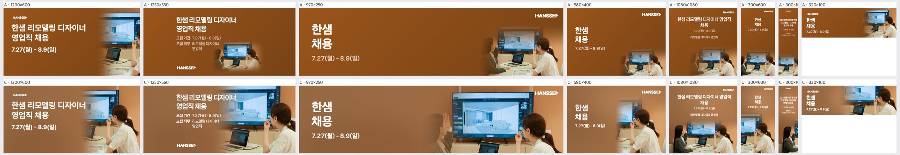
| 규격 | 점수 | 비중 | 크롭 | 배경 | 글자 | 메모 | AI 상자 | 그림 면적·주인공·채움·겹침 |
|---|
| 1200×600 | 3 | ok | subject_cut | ok | ok | 정장 차림 왼쪽 인물이 빠지고 오른쪽 인물과 TV만 남았다. 크롭 중심을 왼쪽으로 옮겨 두 인물이 손짓하며 대화하는 장면을 함께 넣거나, 그라데이션 시작점을 오른쪽으로 밀어 텍스트 영역과 분리하라. | shrink | 45% · 43% · 54% · 18.8% |
| 1250×560 | 2 | too_big | ok | seam | overlap | 제목 '한샘 리모델링 디자이너'와 모집 정보가 밝은 TV 화면 위에 올라가 잘 읽히지 않는다. 사진을 오른쪽 45% 영역으로 줄여 밀고, 텍스트 뒤 TV 영역은 브라운 그라데이션으로 덮어라. | shrink | 54% · 54% · 63% · 45.7% |
| 970×250 | 3 | too_big | face_cut | seam | overlap | HANSSEM 로고가 TV 프레임과 겹친다. 왼쪽 인물은 얼굴이 페이드에 묻혀 손만 남았고, 사진 왼쪽 경계선도 보인다. 로고를 브라운 단색 영역으로 옮기고, 페이드 폭을 넓혀 경계를 지우거나 왼쪽 인물 얼굴까지 크롭에 포함하라. | shrink | 54% · 49% · 55% · 0% |
| 580×400 | 3 | ok | subject_cut | ok | ok | 오른쪽 인물과 TV 일부만 보여 장면이 무엇인지 전달되지 않는다. 사진을 약간 축소해 두 인물과 화면을 모두 담아라. | free | 45% · 30% · 36% · 0% |
| 1080×1080 | 4 | ok | ok | ok | ok | 구성은 안정적이다. 하단 사진이 바닥에 붙어 여유가 없고 '리모델링 디자이너 영업직' 보조 문구가 작으니, 사진을 5% 정도 올리고 보조 문구를 키워라. | free | 51% · 37% · 51% · 0% |
| 300×600 | 3 | too_small | awkward | ok | ok | 하단에 TV와 인물 조각만 작게 남아 위쪽 지면이 비어 보인다. 사진을 세로로 더 크게 키우고, 오른쪽 인물 상반신이 보이도록 크롭하라. | free | 63% · 46% · 52% · 0% |
| 300×1050 | 2 | too_small | awkward | flat | low_contrast | 본문 글자가 지나치게 작아 읽히지 않고 중간 지면이 비어 보인다. 제목을 '한샘 채용'으로 줄여 크게 키우고, 사진은 세로 비중을 40% 이상으로 늘려라. | free | 55% · 27% · 42% · 0% |
| 320×100 | 3 | ok | ok | seam | ok | 사진 왼쪽 끝이 브라운 배경과 맞닿는 경계가 드러난다. 페이드 폭을 넓혀 경계를 지우고, 날짜 글자 크기를 한 단계 키워라. | free | 62% · 51% · 61% · 0% |
hr-doctor · 사진 · AI 유형 photo-bright ·
C 나음얼굴 없는 악수 제안 사진이라 내민 손을 중심으로 크게 쓰고 흰 가운의 청회색 톤을 지면으로 이어 글자 영역을 확보했다. 글자 쪽 변은 충분히 녹이고 빛 번짐 도형으로 지면의 단조로움을 줄였다.
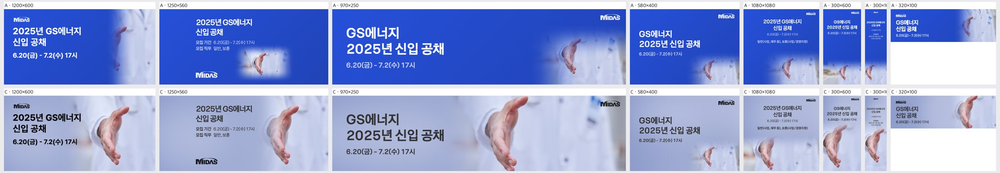
| 규격 | 점수 | 비중 | 크롭 | 배경 | 글자 | 메모 | AI 상자 | 그림 면적·주인공·채움·겹침 |
|---|
| 1200×600 | 4 | ok | ok | ok | ok | 손이 오른쪽에 온전히 보이고 왼쪽 글자 자리도 넉넉하다. 전면 보라빛 틴트가 탁해 보이니 채도를 조금 올리거나 브랜드 블루 쪽으로 옮겨 생기를 준다. | shrink | 62% · 18% · 35% · 0% |
| 1250×560 | 4 | ok | ok | ok | ok | 구성은 안정적이다. 손끝이 오른쪽 가장자리에 붙어 답답하니 키비주얼을 약 5% 왼쪽으로 옮겨 여백을 확보한다. | shrink | 43% · 16% · 28% · 0% |
| 970×250 | 4 | ok | ok | ok | ok | 손과 가운이 중앙 우측에 잘 들어왔다. 오른쪽 위 로고 아래가 흰 가운이라 대비가 약하니 로고 뒤에 옅은 틴트를 깔아 준다. | shrink | 64% · 17% · 32% · 0% |
| 580×400 | 2 | too_small | awkward | flat | ok | 손이 우하단 구석에 작게 잘려 지면 절반이 비어 보인다. 키비주얼을 1.4배쯤 키우고 위로 올려 손 전체가 우측 중앙에 오게 한다. | rule | 6% · 16% · 32% · 0% |
| 1080×1080 | 3 | ok | subject_cut | ok | ok | 손이 좌하단에서 손목 쪽이 잘려 떠 보인다. 키비주얼을 위·오른쪽으로 옮겨 손이 하단 중앙에 온전히 들어오게 한다. | shrink | 48% · 13% · 33% · 0% |
| 300×600 | 3 | ok | subject_cut | ok | ok | 손이 하단 절반을 채우지만 왼쪽에서 잘린다. 키비주얼을 오른쪽으로 옮겨 손바닥과 손가락이 모두 보이게 한다. | grow | 72% · 41% · 55% · 0% |
| 300×1050 | 2 | ok | ok | flat | low_contrast | 상단 글자가 너무 작아 읽히지 않는다. 헤드라인을 2배 이상 키우고 세부 직무 문구는 빼서 세로 공간을 글자에 나눠 준다. | grow | 73% · 45% · 60% · 0% |
| 320×100 | 4 | ok | ok | ok | ok | 손과 글자가 잘 나뉘었다. 날짜 글자가 너무 작으니 한 단계 키우고 로고는 빼서 공간을 확보한다. | grow | 46% · 21% · 37% · 0% |
midas-team-photo · 사진 · AI 유형 photo-bright ·
C 나음밝은 사무실 사진에서 세 사람의 얼굴을 통째로 보존하고, 브랜드색 계열의 중간 이상 어두운 지면으로 그림 가장자리를 녹여 글자 대비를 확보했다. 모양마다 핵심 인물만 좁혀 크게 쓰고 빛 번짐 도형으로 빈 지면을 채웠다.
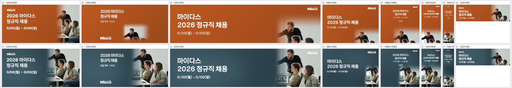
| 규격 | 점수 | 비중 | 크롭 | 배경 | 글자 | 메모 | AI 상자 | 그림 면적·주인공·채움·겹침 |
|---|
| 1200×600 | 4 | ok | ok | ok | ok | 세 인물이 모두 잘 보입니다. 다만 수염 남성의 정수리가 상단에 바짝 붙어 있으니 사진을 5% 정도 내려 머리 위 여백을 확보하세요. | shrink | 47% · 16% · 32% · 0% |
| 1250×560 | 4 | ok | ok | ok | ok | 구성은 안정적입니다. 사진 좌측 페이드 경계가 '모집 직무' 줄 끝과 가까우니 페이드 시작점을 오른쪽으로 20~30px 옮기세요. | shrink | 47% · 19% · 28% · 0% |
| 970×250 | 3 | ok | subject_cut | ok | overlap | 우상단 로고가 사진 위(수염 남성 머리 옆)에 얹혀 있고, 앞줄 두 인물의 얼굴 아래가 하단에서 잘립니다. 로고를 사진 왼쪽 단색 영역으로 옮기고 사진을 축소해 앞줄 인물 턱선까지 들어오게 하세요. | shrink | 33% · 16% · 30% · 0% |
| 580×400 | 3 | too_small | subject_cut | ok | ok | 사진이 우하단 구석에 작게 몰려 인물이 하단에서 잘립니다. 사진 높이를 지면 전체로 키우고 우측 40%를 차지하게 배치하세요. | shrink | 16% · 5% · 20% · 0% |
| 1080×1080 | 3 | too_small | subject_cut | flat | ok | 상단 절반 이상이 단색 청록이고 인물은 하단에 작게 잘려 있습니다. 사진을 하단 60%까지 키우고 텍스트 블록을 확대해 빈 지면을 줄이세요. | shrink | 35% · 13% · 23% · 0% |
| 300×600 | 3 | too_small | subject_cut | flat | ok | 사진이 하단에 작게 들어가 인물 얼굴이 작고 잘립니다. 사진을 하단 55%로 키우고 세 인물의 상반신이 보이도록 크롭 중심을 올리세요. | shrink | 62% · 25% · 38% · 0% |
| 300×1050 | 2 | too_small | subject_cut | flat | low_contrast | 헤드라인과 일정이 너무 작아 읽히지 않고 중간이 비어 있습니다. 헤드라인을 폭의 80%까지 키우고 사진을 하단 50%로 확대하세요. | rule | 15% · 35% · 44% · 0% |
| 320×100 | 4 | ok | ok | ok | ok | 작은 지면에서도 인물이 식별됩니다. 일정 텍스트 크기를 1~2pt 키워 가독성을 높이세요. | rule | 19% · 40% · 56% · 0% |
t1014-asan-photo · 사진 · AI 유형 photo-dark ·
C 나음보랏빛 새벽 야경의 병원 건물을 주인공으로 삼아 보존하고, 지면은 그림의 남색~보라 그라데이션을 이어 쓴다. 모양마다 건물이 잘리지 않게 크기와 위치를 조정하고 글자 쪽은 녹이거나 스크림으로 대비를 확보한다.
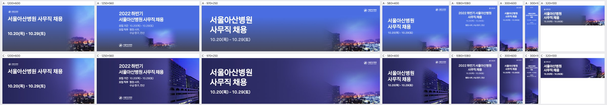
| 규격 | 점수 | 비중 | 크롭 | 배경 | 글자 | 메모 | AI 상자 | 그림 면적·주인공·채움·겹침 |
|---|
| 1200×600 | 3 | too_small | awkward | flat | ok | 우하단 야경 조각만 보이고 병원 건물이 빠졌으니, 사진을 오른쪽 40% 폭으로 키워 좌측 병원 건물 파사드가 들어오게 크롭하고 그라데이션 경계를 더 왼쪽으로 옮긴다. | rule | 15% · 31% · 45% · 0% |
| 1250×560 | 4 | ok | ok | ok | ok | 병원 건물이 잘 살아 있으니, 건물 왼쪽 그라데이션 페이드를 조금 더 길게 줘 단색 영역과의 경계를 부드럽게만 다듬는다. | shrink | 32% · 31% · 43% · 0% |
| 970×250 | 4 | ok | ok | ok | ok | 가운데 단색 구간이 넓으니, 사진 시작점을 왼쪽으로 10~15% 당겨 하늘 그라데이션이 중앙까지 자연스럽게 이어지게 한다. | rule | 5% · 26% · 40% · 0% |
| 580×400 | 4 | ok | ok | ok | ok | '사무직 채용' 끝이 건물 그라데이션에 가까우니, 사진을 오른쪽으로 5% 밀어 글자와 건물 사이 여백을 확보한다. | free | 36% · 36% · 50% · 0% |
| 1080×1080 | 3 | too_small | awkward | flat | ok | 하단 띠처럼 야경만 깔려 상단 2/3가 비어 보이니, 사진을 하단 50%까지 키워 병원 건물과 하늘 일부가 보이게 하고 텍스트 블록을 상단 1/3에 맞춰 재배치한다. | rule | 7% · 32% · 49% · 0% |
| 300×600 | 3 | too_small | awkward | flat | ok | 하단 야경 띠만 있어 중단이 비어 보이니, 세로 크롭으로 병원 건물을 하단 45%에 세워 넣고 위쪽은 하늘색으로 그라데이션 연결한다. | rule | 13% · 27% · 39% · 0% |
| 300×1050 | 3 | too_small | awkward | flat | ok | 제목·기간 글자가 지나치게 작고 중간이 텅 비니, 제목을 폭의 80%로 키우고 건물 세로 크롭 사진을 하단 40%까지 올린다. | shrink | 38% · 31% · 45% · 0% |
| 320×100 | 4 | ok | ok | ok | ok | 건물 노출은 좋으니, 날짜 줄을 한 단계 키우고 로고와 제목 사이 간격을 2px 정도 벌려 답답함만 덜어낸다. | shrink | 38% · 19% · 38% · 0% |
midas-cablebridge · 사진 · AI 유형 photo-bright ·
C 나음푸른 하늘과 바다가 이어지는 사장교 사진이라 브랜드색 계열의 푸른 지면으로 그림을 자연스럽게 녹였다. 모양마다 주탑 두 개를 보존하면서 글자 쪽 변을 fade로 처리해 글자 공간을 확보했다.
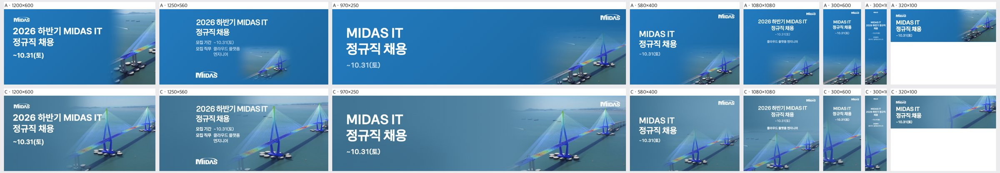
| 규격 | 점수 | 비중 | 크롭 | 배경 | 글자 | 메모 | AI 상자 | 그림 면적·주인공·채움·겹침 |
|---|
| 1200×600 | 3 | ok | ok | ok | overlap | 헤드라인 'MIDAS IT'가 왼쪽 주탑 케이블과 겹친다. 헤드라인을 두 줄('2026 하반기' / 'MIDAS IT 정규직 채용')로 끊어 글자 폭을 화면 45% 안으로 줄이거나, 키비주얼을 오른쪽으로 10%가량 밀어야 한다. | shrink | 62% · 46% · 53% · 47.1% |
| 1250×560 | 4 | ok | ok | ok | ok | 헤드라인 오른쪽 끝이 케이블 상단에 닿을 듯 가깝다. 다리를 오른쪽 아래로 5% 내리고, 보조 문구 '모집 기간·모집 직무'는 한 단계 키우거나 굵게 해서 읽힘을 확보한다. | shrink | 62% · 52% · 58% · 62.9% |
| 970×250 | 4 | ok | ok | ok | ok | 가운데 바다 면이 넓게 비어 보인다. 다리를 왼쪽으로 10% 당겨 주탑 두 개가 온전히 보이게 하고 텍스트와의 간격을 좁힌다. | shrink | 42% · 26% · 37% · 0% |
| 580×400 | 4 | ok | ok | ok | ok | 날짜 '~10.31(토)'가 작아서 약하다. 한 단계 키우고, 다리는 지금 위치를 그대로 둔다. | shrink | 43% · 40% · 49% · 49.2% |
| 1080×1080 | 3 | ok | ok | flat | low_contrast | 정사각형인데 헤드라인이 작고 위쪽 하늘·바다 면이 비어 보인다. 헤드라인을 1.5배 키우고 날짜·직무 문구의 크기와 굵기를 올린다. 다리는 화면 하단 55%까지 키운다. | shrink | 60% · 52% · 67% · 0% |
| 300×600 | 3 | ok | awkward | ok | low_contrast | 주탑 일부만 잘려 조각처럼 보이고 보조 문구는 너무 작다. 주탑 하나가 꼭대기부터 교각까지 온전히 들어오게 크롭하고 날짜 크기를 키운다. | grow | 74% · 57% · 65% · 100% |
| 300×1050 | 2 | ok | awkward | flat | low_contrast | 헤드라인과 정보 문구가 판독할 수 없을 만큼 작고 중간 지면이 비어 있다. 헤드라인을 폭 80%까지 키워 세로로 줄바꿈하고, 다리는 주탑 하나를 세로로 크게 크롭해 하단 절반을 채운다. | free | 55% · 46% · 58% · 0% |
| 320×100 | 4 | ok | ok | ok | ok | 날짜가 너무 작아 거의 안 읽힌다. 날짜를 빼고 'MIDAS IT 정규직 채용'만 남겨 크게 쓴다. | shrink | 50% · 38% · 53% · 0% |
t1014-dongsuh · 누끼 · AI 유형 cutout ·
C 나음투명 배경 인물 누끼라 브랜드 노란색 지면 위에 얼굴과 맥심 스틱을 온전히 보존하고 글자는 반대쪽에 둔다. 좁은 모양은 얼굴과 스틱 중심으로 좁혀 크게 쓰고 부드러운 빛 번짐으로 지면을 채운다.
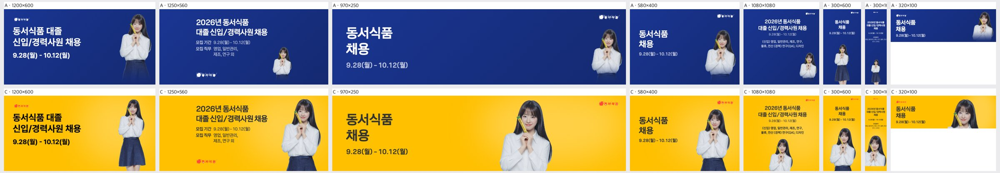
| 규격 | 점수 | 비중 | 크롭 | 배경 | 글자 | 메모 | AI 상자 | 그림 면적·주인공·채움·겹침 |
|---|
| 1200×600 | 4 | ok | ok | ok | ok | 인물이 오른쪽 끝에 붙어 있어 답답하니 우측 여백을 40px 정도 확보해 안쪽으로 옮기고, 빨간 로고는 노랑 위에서 약하니 흰 바탕 배지나 진한 버전으로 바꾼다. | ok | 21% · 11% · 24% · 0% |
| 1250×560 | 4 | ok | ok | ok | ok | 허리 크롭과 제품 노출이 좋고, 좌하단 로고만 노랑 대비가 약하니 크기를 키우거나 대비가 높은 버전으로 바꾼다. | free | 31% · 20% · 37% · 0% |
| 970×250 | 3 | ok | ok | flat | ok | 인물이 가운데에 떠 있어 오른쪽 3분의 1이 빈 노랑으로 남으니 인물을 우측(로고 아래쪽)으로 옮기고, 로고와 겹치지 않게 맞춘다. | free | 67% · 19% · 27% · 0% |
| 580×400 | 4 | ok | ok | ok | ok | 균형은 좋다. 로고와 인물 머리가 가까우니 로고를 조금 더 위·오른쪽 모서리로 붙인다. | free | 40% · 23% · 32% · 0% |
| 1080×1080 | 3 | too_small | ok | flat | ok | 인물이 하단 중앙에 작게 박혀 노랑 면이 비어 보이니 인물을 1.5배 키워 우하단에 두고, 텍스트 블록은 좌상단 정렬로 바꾼다. 직무 소문구 크기도 키운다. | free | 45% · 14% · 38% · 0% |
| 300×600 | 3 | ok | ok | ok | ok | 상단 타이틀이 작아 지면 대비 존재감이 약하니 '동서식품 채용' 크기를 키우고, 인물은 허리 위 크롭으로 확대한다. | shrink | 54% · 40% · 48% · 0% |
| 300×1050 | 2 | too_small | ok | flat | low_contrast | 본문이 깨알 같아 읽히지 않으니 직무 상세를 빼고 타이틀과 기간만 크게 남기며, 인물을 세로 중하단에 크게 키워 빈 노랑 면을 줄인다. | shrink | 50% · 24% · 41% · 0% |
| 320×100 | 4 | ok | ok | ok | ok | 정수리가 상단에 거의 닿으니 인물을 4~6px 내려 머리 여백을 확보한다. | free | 58% · 29% · 42% · 0% |
t1014-jeil · 누끼 · AI 유형 cutout-scene ·
C 나음투명 배경의 JEIL 입체 글자 일러스트를 모양마다 핵심만 크게 잡고, 밝은 하늘색 지면에 빛 번짐을 더해 이어 붙였다. 로고는 파란 톤이라 밝은 지면과 대비되어 잘 읽힌다.

| 규격 | 점수 | 비중 | 크롭 | 배경 | 글자 | 메모 | AI 상자 | 그림 면적·주인공·채움·겹침 |
|---|
| 1200×600 | 4 | ok | ok | ok | ok | 키비주얼을 10% 정도 키우고 수직 중앙으로 올려 우측 하단의 빈 공간을 줄이면 균형이 더 맞는다. | shrink | 27% · 13% · 29% · 0% |
| 1250×560 | 3 | too_small | subject_cut | ok | ok | 키비주얼이 우하단에 붙어 하단 실험실 장면이 잘리므로, 하단 여백을 두고 위로 올리면서 15~20% 키워 우측 상단의 빈 공간을 채운다. | shrink | 27% · 14% · 29% · 0% |
| 970×250 | 3 | too_big | subject_cut | ok | ok | 키비주얼이 세로 높이를 넘어 공장 상단과 하단 실험실이 잘리고 헤드라인 끝에 바짝 붙으므로, 높이 안에 들어오게 축소하고 오른쪽으로 옮겨 텍스트와 간격을 확보한다. | grow | 71% · 26% · 41% · 0% |
| 580×400 | 3 | too_small | subject_cut | ok | ok | 우하단 키비주얼이 작은 데다 바닥에서 잘리므로, 하단 안쪽으로 올리고 키워 텍스트 아래 우측 빈 영역을 채운다. | shrink | 40% · 12% · 27% · 0% |
| 1080×1080 | 3 | too_small | subject_cut | ok | ok | 정사각형 하단에 키비주얼이 작게 놓이고 하단 실험실이 잘리므로, 1.3배 정도 키워 중앙 하단에 전체가 보이게 배치하고 텍스트 블록과 간격을 맞춘다. | shrink | 49% · 24% · 38% · 0% |
| 300×600 | 3 | ok | awkward | ok | ok | JEIL 글자 일부와 오른쪽 장면이 캔버스 밖으로 잘리므로, 폭에 맞춰 축소하고 하단 여백을 두어 키비주얼 전체 실루엣이 보이게 한다. | shrink | 39% · 14% · 22% · 0% |
| 300×1050 | 2 | too_small | awkward | flat | ok | 긴 세로 지면 중간이 비어 있고 키비주얼은 하단에 작게 잘려 있으므로, 키비주얼을 폭에 맞춰 중하단에 크게 두고 헤드라인 크기를 키워 수직 리듬을 만든다. | shrink | 31% · 14% · 25% · 0% |
| 320×100 | 3 | ok | awkward | ok | ok | JEIL 글자 조각만 상단이 잘린 채 보이므로, 글자 묶음 전체가 들어오게 축소하거나 'JEIL' 로고 부분만 깔끔하게 트리밍한다. | grow | 38% · 24% · 44% · 0% |
t1014-bionote-dog · 누끼 · AI 유형 cutout-character ·
C 나음투명 배경 골든리트리버 누끼를 브랜드 블루 지면 위에 따뜻한 베이지와 보색 대비로 올려 친근하고 시선을 끄는 채용 광고로 만든다. 모양마다 얼굴을 통째로 살리고 글자 쪽을 비워 가독성을 확보한다.

| 규격 | 점수 | 비중 | 크롭 | 배경 | 글자 | 메모 | AI 상자 | 그림 면적·주인공·채움·겹침 |
|---|
| 1200×600 | 4 | ok | ok | ok | ok | 강아지 앞발이 하단에 거의 닿으니 앞발까지 온전히 보이도록 키비주얼을 5~8% 줄이고 하단 여백을 확보한다. | shrink | 31% · 27% · 42% · 0% |
| 1250×560 | 4 | ok | ok | ok | ok | 헤드라인 오른쪽 끝과 강아지 귀 사이가 너무 가까우니 강아지를 오른쪽으로 40px쯤 옮겨 텍스트와 숨 쉴 간격을 둔다. | shrink | 31% · 25% · 43% · 0% |
| 970×250 | 4 | ok | ok | ok | ok | 텍스트와 강아지 사이 중앙이 비어 보이니 강아지를 왼쪽으로 조금 당기거나 조금 키워 가슴 위까지 보이게 균형을 맞춘다. | shrink | 31% · 15% · 29% · 0% |
| 580×400 | 2 | too_small | awkward | flat | ok | 강아지가 우하단에서 머리만 빼꼼 보여 어색하니 높이의 70% 이상으로 키워 얼굴과 가슴이 보이게 우측에 배치하고 텍스트는 좌측으로 정렬한다. | free | 34% · 4% · 19% · 0% |
| 1080×1080 | 3 | ok | awkward | flat | ok | 강아지가 가슴에서 잘려 하단에서 솟아오른 조각처럼 보이니 앉은 자세가 허리까지 보이도록 축소·하향 배치하고 상단 텍스트 블록을 키워 위아래 비중을 맞춘다. | free | 45% · 10% · 33% · 0% |
| 300×600 | 4 | ok | ok | ok | ok | 강아지 얼굴과 텍스트 사이 여백이 좁으니 강아지를 20px쯤 내려 날짜 줄과 간격을 확보한다. | free | 63% · 17% · 29% · 0% |
| 300×1050 | 2 | too_small | ok | flat | low_contrast | 텍스트가 너무 작아 안 읽히고 가운데가 비어 있으니 헤드라인을 폭에 맞춰 최소 2배로 키우고, 강아지는 전신이 보이게 키워 하단 40%를 채운다. | shrink | 40% · 23% · 40% · 0% |
| 320×100 | 4 | ok | ok | ok | ok | 강아지 머리 윗부분이 상단에 바짝 붙어 있으니 약간 줄여 정수리 여백을 주고, 헤드라인은 한 단계 키운다. | free | 43% · 40% · 59% · 0% |
abl-group · 누끼 · AI 유형 cutout-character ·
C 나음투명 배경 캐릭터 일러스트라 하늘색 계열 지면을 캠페인 공통으로 깔고, 모양별로 캐릭터를 크게 배치해 글자 쪽을 비웠다. 좁은 모양은 곰·벌·병아리 등 핵심 캐릭터만 골라 얼굴이 잘리지 않게 했다.

| 규격 | 점수 | 비중 | 크롭 | 배경 | 글자 | 메모 | AI 상자 | 그림 면적·주인공·채움·겹침 |
|---|
| 1200×600 | 3 | too_small | ok | flat | ok | 캐릭터 떼를 지면 높이의 약 55%까지 키워 우측 하단을 채우고, 텍스트 블록 아래와 우측 상단의 빈 면적을 줄인다. | shrink | 19% · 12% · 29% · 0% |
| 1250×560 | 4 | ok | ok | ok | ok | 하단 좌측 MIDAS 로고가 홀로 떠 보이므로 상단 텍스트 블록 위로 올려 정보 위계를 정리한다. | ok | 26% · 21% · 33% · 0% |
| 970×250 | 4 | ok | ok | ok | ok | 노랑벌 날개가 '공채' 끝과 너무 가까우니 캐릭터 그룹을 우측으로 20~30px 밀어 텍스트와 간격을 확보한다. | free | 55% · 36% · 51% · 0% |
| 580×400 | 4 | ok | ok | ok | ok | 캐릭터 발이 하단 끝에 붙어 답답하니 그룹을 10% 정도 키우되 하단 여백을 약간 둔다. | shrink | 36% · 18% · 34% · 0% |
| 1080×1080 | 3 | too_small | subject_cut | flat | low_contrast | 중앙이 비어 있으니 캐릭터 떼를 지면 높이의 40% 이상으로 키워 중앙 하단에 배치하고, 좌측 노랑벌이 잘리지 않게 하며, 날짜·직무 텍스트를 1.5배 이상 키운다. | ok | 42% · 29% · 49% · 0% |
| 300×600 | 2 | ok | subject_cut | ok | low_contrast | 노랑벌·두더지가 잘려 나갔으므로 그룹을 두 줄로 재배치하거나 대표 캐릭터 2~3마리만 온전히 보이게 하고, 본문 글자를 키운다. | free | 63% · 15% · 28% · 0% |
| 300×1050 | 2 | too_small | awkward | flat | low_contrast | 병아리와 잘린 곰만 남은 조각 크롭을 버리고 캐릭터를 세로로 쌓아 하단 절반을 채우며, 판독 불가 수준인 텍스트를 최소 2배 키운다. | shrink | 38% · 32% · 47% · 0% |
| 320×100 | 3 | ok | subject_cut | ok | ok | 분홍벌·병아리·곰만 보이고 대표 노랑벌이 빠졌으니 그룹을 축소해 전원이 들어가게 하거나 노랑벌 중심으로 크롭한다. | free | 53% · 4% · 21% · 0% |
midas-folder-blue · 누끼 · AI 유형 cutout-object ·
C 나음투명 배경의 파란 3D 폴더 아이콘이라 통째로 보존하고 가장자리는 녹이지 않았다. 지면은 아이콘의 파란색과 이어지는 중간 톤 블루로 통일하고 빛 번짐으로 단조로움을 줄였다.
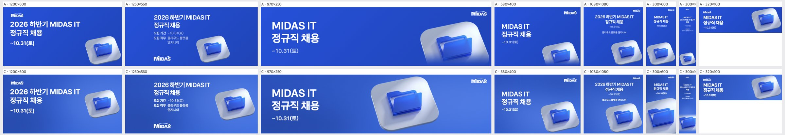
| 규격 | 점수 | 비중 | 크롭 | 배경 | 글자 | 메모 | AI 상자 | 그림 면적·주인공·채움·겹침 |
|---|
| 1200×600 | 4 | ok | ok | ok | ok | 아이콘이 오른쪽 끝에 붙어 텍스트 블록과의 간격이 넓으니, 아이콘을 왼쪽으로 약 40px 옮기고 10% 키워 좌우 무게를 맞출 것. | shrink | 25% · 14% · 25% · 0% |
| 1250×560 | 4 | ok | ok | ok | ok | 아이콘이 화면 중간 높이에 떠 있어 하단 로고와 따로 노니, 아이콘을 15% 키우고 세로 중심을 텍스트 블록 중심에 맞출 것. | shrink | 25% · 16% · 28% · 0% |
| 970×250 | 4 | ok | ok | ok | ok | 아이콘이 가운데에 몰려 우측 로고 주변이 비어 보이니, 아이콘을 오른쪽으로 약 80px 옮기고 상하 여백을 10px 이상 확보할 것. | grow | 50% · 28% · 39% · 0% |
| 580×400 | 3 | ok | awkward | ok | ok | 받침 플레이트의 오른쪽·아래 모서리가 프레임에 잘리니, 아이콘을 좌상단으로 20~30px 옮겨 전체가 보이게 할 것. | free | 48% · 24% · 35% · 0% |
| 1080×1080 | 3 | too_small | awkward | flat | ok | 정사각 지면에 비해 아이콘이 작고 하단 플레이트가 잘리니, 아이콘을 1.4배 키워 텍스트 아래 중앙에 온전히 배치하고 하단 여백을 둘 것. | free | 51% · 31% · 46% · 0% |
| 300×600 | 2 | ok | subject_cut | flat | ok | 아이콘 오른쪽이 폴더까지 프레임에 잘리고 중간이 비어 있으니, 아이콘을 가로 폭의 80% 안으로 줄여 중앙 정렬하고 텍스트 아래로 끌어올릴 것. | free | 63% · 29% · 39% · 0% |
| 300×1050 | 2 | too_small | subject_cut | flat | low_contrast | 텍스트가 너무 작아 안 읽히고 중간 60%가 비어 있으며 아이콘이 오른쪽에서 잘리니, 헤드라인을 2배로 키우고 아이콘을 중앙 정렬해 전체가 보이게 한 뒤 세로 중앙 쪽으로 올릴 것. | ok | 32% · 20% · 32% · 0% |
| 320×100 | 4 | ok | ok | ok | ok | 아이콘이 상하 프레임에 거의 닿으니 10% 줄여 위아래 숨 쉴 공간을 줄 것. | rule | 40% · 32% · 47% · 0% |
t1014-gs2025 · 오브젝트·일러스트 · AI 유형 illust-scene ·
C 나음하늘이 넓게 비어 있고 확성기와 인물이 하단에 모인 장면이라, 하늘색 지면을 그림 바탕과 이어 글자를 위나 왼쪽 하늘에 놓는다. 인물 얼굴은 통째로 보존하고 모양마다 확성기와 사람들을 크게 써서 지면을 채웠다.
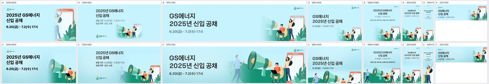
| 규격 | 점수 | 비중 | 크롭 | 배경 | 글자 | 메모 | AI 상자 | 그림 면적·주인공·채움·겹침 |
|---|
| 1200×600 | 3 | ok | subject_cut | ok | ok | 메가폰과 앉은 남자만 오른쪽 아래에 몰려 있고 손 든 여자와 휴대폰이 빠졌다. 크롭 창을 오른쪽으로 넓혀 여자와 휴대폰까지 넣고, 그림을 조금 키워 오른쪽 아래 빈 하늘을 줄인다. | shrink | 39% · 25% · 42% · 0% |
| 1250×560 | 3 | too_small | ok | ok | ok | 왼쪽 걷는 남자가 페이드 마스크에 묻혀 유령처럼 보인다. 마스크 시작점을 남자 왼쪽 밖으로 옮기고, 그림을 15~20% 키워 우측 하단을 채운다. | shrink | 52% · 21% · 32% · 0% |
| 970×250 | 4 | ok | ok | ok | ok | 전체 장면이 잘 들어갔지만 걷는 남자가 반투명하게 흐려졌다. 페이드를 남자 왼쪽 끝부터 시작하도록 줄여 인물을 또렷하게 살린다. | shrink | 55% · 37% · 53% · 0% |
| 580×400 | 3 | too_small | subject_cut | ok | ok | 하단 띠에 인물들이 허리 위로만 잘려 붙어 있다. 그림 앵커를 위로 올리고 텍스트 블록 행간을 줄여, 걷는 남자와 앉은 남자의 상반신 이상이 보이게 한다. | shrink | 41% · 32% · 48% · 0% |
| 1080×1080 | 4 | too_small | ok | ok | ok | 장면은 온전하나 하단 1/3에 작게 깔려 지면 중앙이 빈다. 그림을 20% 키워 중앙까지 올리고, 텍스트와의 간격을 좁힌다. | shrink | 48% · 43% · 63% · 0% |
| 300×600 | 3 | ok | subject_cut | ok | ok | 걷는 남자가 빠졌고 메가폰이 왼쪽에서 잘린다. 메가폰·앉은 남자·여자가 온전히 들어가게 크롭 중심을 조정하고, 일정 글자를 한 단계 키운다. | free | 63% · 19% · 32% · 0% |
| 300×1050 | 2 | ok | awkward | flat | low_contrast | 상단 텍스트가 판독 불가 수준으로 작고, 그림은 여자 한 명만 크게 잘려 나왔다. 제목을 2배 이상 키워 중단까지 내리고, 그림은 메가폰과 여자가 함께 보이도록 축소해 재크롭한다. | free | 57% · 56% · 71% · 0% |
| 320×100 | 4 | ok | ok | ok | ok | 여자의 든 손이 상단에 닿아 잘린다. 그림을 약간 축소하거나 아래로 내려 손끝 여백을 확보한다. | shrink | 30% · 7% · 23% · 0% |
t1014-lt-v2 · 오브젝트·일러스트 · AI 유형 illust-grad-bg ·
C 나음어두운 남색 그라데이션 위의 회로 칩을 보존 대상으로 잡고, 캠페인 공통 남색 지면에 그림 가장자리를 녹여 이어 붙였다. 글자는 비어 있는 왼쪽·위쪽에 놓이도록 칩을 오른쪽 또는 아래에 크게 배치했다.
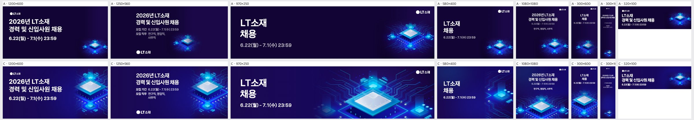
| 규격 | 점수 | 비중 | 크롭 | 배경 | 글자 | 메모 | AI 상자 | 그림 면적·주인공·채움·겹침 |
|---|
| 1200×600 | 4 | ok | subject_cut | ok | ok | 칩 오른쪽 끝이 지면 밖으로 살짝 잘리니 키비주얼을 왼쪽으로 약 8% 옮겨 칩 전체가 오른쪽 여백 안에 들어오게 한다. | shrink | 34% · 16% · 37% · 1.6% |
| 1250×560 | 3 | ok | subject_cut | ok | ok | 칩의 절반 가까이가 오른쪽 끝에서 잘리니 키비주얼을 약 15% 줄이고 왼쪽으로 당겨 칩 중심을 지면 가로 75% 지점에 맞춘다. | shrink | 35% · 17% · 34% · 0.9% |
| 970×250 | 4 | ok | subject_cut | ok | ok | 칩 하단이 지면 아래로 잘리니 키비주얼을 약 10% 줄이거나 위로 올려 칩 아랫면이 보이게 한다. | free | 62% · 21% · 30% · 0% |
| 580×400 | 2 | ok | awkward | ok | ok | 오른쪽 끝에 칩 조각만 보이니 키비주얼을 줄이고 하단 오른쪽 사분면에 칩 전체를 배치해 텍스트와 대각 구도로 만든다. | free | 39% · 2% · 11% · 0% |
| 1080×1080 | 4 | ok | subject_cut | ok | ok | 칩 아랫면이 하단에서 잘리니 키비주얼을 약 8% 위로 올리고, 날짜와 직무 텍스트를 한 단계 키워 가독성을 높인다. | free | 51% · 15% · 31% · 0% |
| 300×600 | 4 | ok | ok | ok | ok | 칩이 좌우 끝에 거의 닿으니 약 10% 축소해 양옆 여백을 확보하고, 날짜 텍스트를 1~2pt 키운다. | shrink | 60% · 24% · 32% · 0% |
| 300×1050 | 2 | too_small | awkward | flat | clipped | 칩이 거의 안 보이고 글자는 읽기 힘들 만큼 작으며 날짜 앞부분이 잘리니, 하단 40% 영역에 칩을 크게 배치하고 타이틀과 날짜를 2배 이상 키워 줄바꿈을 다시 잡는다. | rule | 0% · 12% · 25% · 0% |
| 320×100 | 4 | ok | ok | ok | ok | 텍스트가 세 줄이라 빽빽하니 '2026년'을 빼거나 날짜만 남겨 두 줄로 줄이고 글자 크기를 키운다. | rule | 17% · 20% · 42% · 0% |
midas-faces-3d · 오브젝트·일러스트 · AI 유형 illust-grad-bg ·
C 나음밝은 하늘색 그라데이션 바탕의 3D 캐릭터 일러스트라 바탕색을 지면으로 이어 가장자리를 녹이고, 세 얼굴은 온전히 보존했다. 모양마다 글자 반대쪽에 그림을 크게 두고 빛 번짐으로 지면을 채웠다.
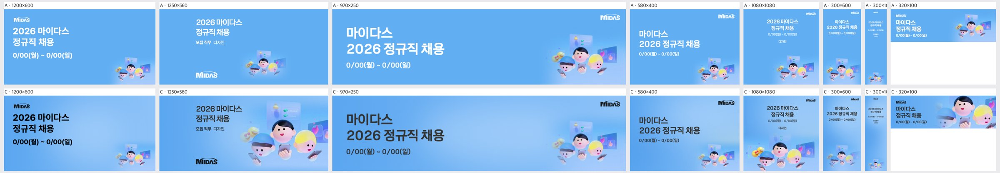
| 규격 | 점수 | 비중 | 크롭 | 배경 | 글자 | 메모 | AI 상자 | 그림 면적·주인공·채움·겹침 |
|---|
| 1200×600 | 2 | too_small | ok | flat | ok | 오른쪽 아래 구석에 작게 박힌 KV를 높이 70% 수준으로 키워 오른쪽 절반에 두고, 검정 글자는 흰색으로 바꿔 배경색과 맞추세요. | rule | 6% · 5% · 20% · 0% |
| 1250×560 | 4 | ok | ok | ok | low_contrast | KV 배치는 좋습니다. 진회색 글자가 중간 톤 파랑 위에서 탁해 보이니 흰색이나 진남색으로 바꿔 대비를 높이세요. | shrink | 57% · 27% · 36% · 0% |
| 970×250 | 4 | ok | ok | ok | low_contrast | KV를 10~15% 위로 올려 아래쪽 손과 폰이 잘리지 않게 하고, 회색 헤드라인은 흰색으로 바꾸세요. | rule | 11% · 8% · 23% · 0% |
| 580×400 | 3 | too_small | ok | flat | ok | 오른쪽 아래 KV를 높이 55~60%까지 키우고 텍스트 블록과 아래 정렬을 맞춰 가운데 빈 공간을 줄이세요. | rule | 10% · 8% · 22% · 0% |
| 1080×1080 | 3 | ok | subject_cut | flat | ok | KV가 아래 가장자리에 걸려 얼굴 아래와 폰이 잘립니다. KV를 20% 위로 올리고 키워 중앙 하단에 온전히 보이게 하고, 텍스트와의 간격을 줄이세요. | shrink | 52% · 23% · 34% · 0% |
| 300×600 | 2 | too_small | ok | flat | ok | KV를 폭 100%에 가깝게 키워 하단 40%를 채우고 텍스트를 더 키워 중간 공백을 없애세요. | rule | 0% · 19% · 31% · 0% |
| 300×1050 | 1 | too_small | ok | flat | low_contrast | 텍스트가 판독 불가 수준으로 작고 KV도 점처럼 보입니다. 헤드라인을 2~3배 키우고 KV를 폭 가득 채워 하단 1/3에 배치하세요. | rule | 0% · 8% · 16% · 0% |
| 320×100 | 3 | too_big | face_cut | ok | ok | 인물 얼굴이 좌우 가장자리에서 잘리니 KV를 80% 정도로 줄여 세 얼굴이 온전히 들어오게 하고, 로고는 더 키우세요. | free | 60% · 41% · 57% · 0% |
pin-15 · 오브젝트·일러스트 · AI 유형 자동 ·
C 나음파랑에서 살구로 이어지는 배경에 신호등 오브제를 누끼처럼 쓰고, 지면은 그림 위쪽 파랑을 이어 글자 대비를 확보했다. 모양마다 신호등을 크게 두되 글자 쪽 변은 충분히 녹여 자연스럽게 이어지게 했다.
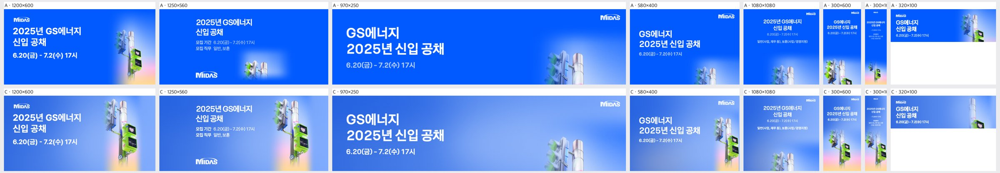
| 규격 | 점수 | 비중 | 크롭 | 배경 | 글자 | 메모 | AI 상자 | 그림 면적·주인공·채움·겹침 |
|---|
| 1200×600 | 4 | ok | ok | ok | ok | 신호등 전체와 초록 보행신호가 잘 보이니, 기둥 하단의 분홍·살구 그라데이션이 파란 지면과 뭉개지는 부분만 블러를 조금 더 넓혀 자연스럽게 녹이면 된다. | shrink | 28% · 21% · 38% · 0% |
| 1250×560 | 4 | ok | ok | ok | ok | 신호등 머리 상단이 프레임에 바짝 붙어 있으니, KV를 5~8% 아래로 내려 위쪽 여백을 확보한다. | shrink | 28% · 21% · 33% · 0% |
| 970×250 | 2 | too_small | awkward | flat | ok | 차량 신호등 상단과 기둥 머리만 보이고 초록 보행신호가 빠졌으니, 크롭 기준을 보행신호기(이미지 중하단)로 옮겨 신호등과 보행신호가 함께 들어오도록 우측 영역을 다시 잡는다. | rule | 6% · 19% · 34% · 0% |
| 580×400 | 3 | ok | subject_cut | ok | ok | 보행신호기가 우측 끝에서 잘리니, KV를 왼쪽으로 10% 정도 당기거나 약간 축소해 보행신호 박스 전체가 프레임 안에 들어오게 한다. | free | 22% · 17% · 32% · 0% |
| 1080×1080 | 2 | too_small | awkward | flat | ok | 하단에 신호등 윗부분만 조금 걸려 있고 화면 대부분이 빈 파랑이니, KV를 1.5배 이상 키우고 위로 올려 신호등과 보행신호가 하단 절반을 채우게 한다. | rule | 8% · 23% · 43% · 0% |
| 300×600 | 4 | ok | ok | ok | ok | 신호등과 보행신호가 하단에 잘 들어오니, 상단 텍스트와 KV 사이의 빈 구간만 줄이도록 KV를 약간 위로 올린다. | ok | 62% · 32% · 45% · 0% |
| 300×1050 | 3 | ok | subject_cut | ok | low_contrast | 폭이 좁아 신호등 좌측이 잘리고 상단 본문 글자가 너무 작으니, 일정·직무 문구를 줄이고 제목 크기를 키우며 KV를 중앙 정렬한다. | free | 57% · 54% · 69% · 0% |
| 320×100 | 2 | too_small | awkward | flat | ok | 기둥 일부와 초록 조각만 보여 무엇인지 알 수 없으니, 보행신호기 박스를 중심으로 확대 크롭해 우측에 배치한다. | shrink | 26% · 16% · 32% · 0% |
t1014-asan-illust · 오브젝트·일러스트 · AI 유형 자동 ·
C 나음파란 단색 배경의 일러스트라 같은 파란 지면으로 자연스럽게 이어 붙이고, 얼굴은 통째로 보존했다. 좁은 모양은 가운데 두 명으로 좁혀 크게 쓰고 글자 쪽은 비워 두었다.
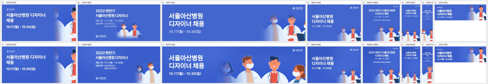
| 규격 | 점수 | 비중 | 크롭 | 배경 | 글자 | 메모 | AI 상자 | 그림 면적·주인공·채움·겹침 |
|---|
| 1200×600 | 2 | too_small | subject_cut | flat | ok | 오른쪽 끝에 남자 의사 한 명만 반쯤 걸려 있고 왼쪽 2/3는 빈 파란 면입니다. 키비주얼을 높이 100% 이상으로 키우고 오른쪽 절반에 네 인물 중 2~3명이 얼굴까지 온전히 보이도록 배치해야 합니다. | rule | 14% · 30% · 44% · 0% |
| 1250×560 | 3 | too_small | awkward | flat | ok | 우하단에 여자 의사와 남자 의사 상반신만 작게 걸려 있고 오른쪽 상단이 비어 있습니다. 인물 그룹을 1.5배쯤 키워 오른쪽 절반을 채우고, 하단 페이드를 줄여 인물이 바닥에 잘려 떠 보이지 않게 해야 합니다. | shrink | 20% · 18% · 30% · 0% |
| 970×250 | 4 | ok | ok | ok | ok | 네 인물이 얼굴까지 크게 잘 보이고 텍스트와도 분리돼 좋습니다. 맨 오른쪽 여자 의사가 가장자리에 붙어 있으니 그룹을 왼쪽으로 20~30px 당겨 여백을 확보하면 납품 가능합니다. | free | 53% · 48% · 63% · 0% |
| 580×400 | 2 | too_small | awkward | flat | ok | 하단 모서리에 머리 조각들만 작게 몰려 있어 무엇인지 읽히지 않습니다. 인물을 키워 하단 절반을 채우고 텍스트는 상단에 두어 상하로 분할해야 합니다. | rule | 6% · 20% · 35% · 0% |
| 1080×1080 | 3 | too_small | awkward | flat | ok | 인물들이 하단 1/4에 머리만 작게 깔려 있고 중앙이 비어 있습니다. 인물 그룹을 화면 폭 가득(약 1.6배)으로 키워 하단 절반을 차지하게 해야 합니다. | rule | 10% · 33% · 50% · 0% |
| 300×600 | 2 | too_small | awkward | flat | ok | 하단에 아주 작은 얼굴들만 보여 세로 지면 대부분이 빈 파랑입니다. 인물 1~2명을 크게 크롭해 하단 40%를 채우고 타이틀 크기도 키워야 합니다. | rule | 16% · 31% · 45% · 0% |
| 300×1050 | 2 | too_small | awkward | flat | low_contrast | 타이틀과 날짜가 너무 작아 읽히지 않고 인물은 하단에 조각으로만 보입니다. 타이틀을 2배 이상 키우고, 인물 한 명을 상반신 위주로 크게 크롭해 하단에 배치해야 합니다. | free | 55% · 25% · 39% · 0% |
| 320×100 | 3 | ok | awkward | ok | ok | 오른쪽에 인물 얼굴 일부가 걸려 있지만 잘린 조각처럼 보입니다. 얼굴이 하나 온전히 보이는 인물 1명으로 크롭을 맞춰 텍스트 오른쪽에 붙이는 편이 좋습니다. | rule | 18% · 38% · 58% · 0% |